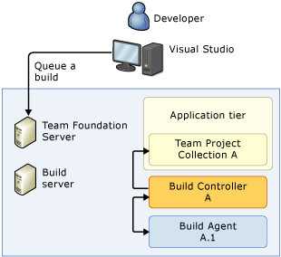
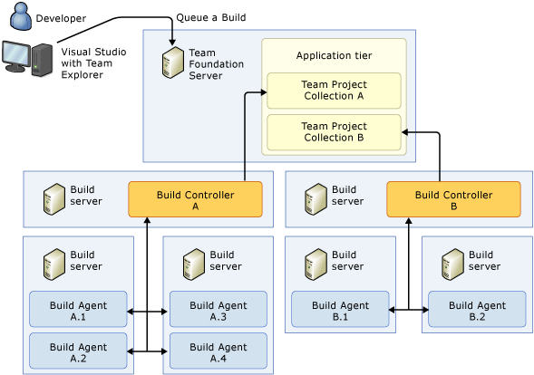
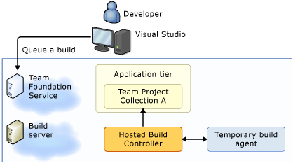

Team Foundation Server Builds
11/21/2013
Topics of Discussion
- Overview / What is a build server?
- How TFS acts as a build server
- How to create a build
- Automating Tasks
Team Foundation Server
- Microsoft’s Application Lifecycle Management solution
- Task Tracking
- Source Control
- Bug Tracking
- Build Server
- Deployments
- Lab Management
- etc
What is a Build Server?
- A service often running on a dedicated machine
- Handles running build scripts based on an event
- Often keeps track of build artifacts, retrieves dependencies, logs results, keeps statistics
the heart monitor of your project -Jeff Atwood
Examples
- Team Foundation Server
- Jenkins
- Hudson
- Team City
- CruiseControl.net
Pros
- Centralized
- Repeatable
- Code Health Monitoring
- Continuous Integration
Cons
- Requires time to set up early on in the project.
- Another piece of infrastructure to maintain.
- Once you get used to automated builds, doing it by hand is a real pain.
Builds in TFS
Used for automated builds for code stored within Team Foundation System. Components include:
- Team Foundation Server
- Build Server
- Build Controller
- Build Agent
Small Team Infrastructure

source: MSDN
Large Team Infrastructure

source: MSDN
Visual Studio Online Infrastructure

source: MSDN
Build Process Template
- TFS 2010 moved from a MSBuild based build process to a Windows Workflow based build process
- The workflows are called Build Process Templates
- Edit them like a normal workflow
- Workflows have arguments that can be customized through the build UI as part of the build definition
Build Definition
A specific instance of a build which requires:
- Name
- Status
- Trigger
- Source Settings
- Build Defaults
- Process
- Retention Policy
Built in Features
- Unit Testing
- Code Analysis
- Deployments
Bolt on TFS Activities
Assemblies must be checked into source control and the build controller must point to the custom assembly directory.
- Build your own
- Open Source (TFS Extensions)
Versioning
- Need to download and customize the workflow
- Can set how the version number is constructed
- Lots of customization available
StyleCop
TFS Extensions has a StyleCop activity that will run stylecop on the source files and report back as part of the build process.
- Helps enforce consistent code style throughout the project
- Can be customized per project
- Violations can be set as errors